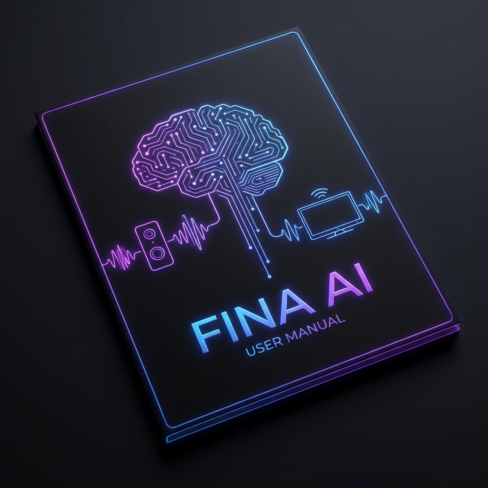
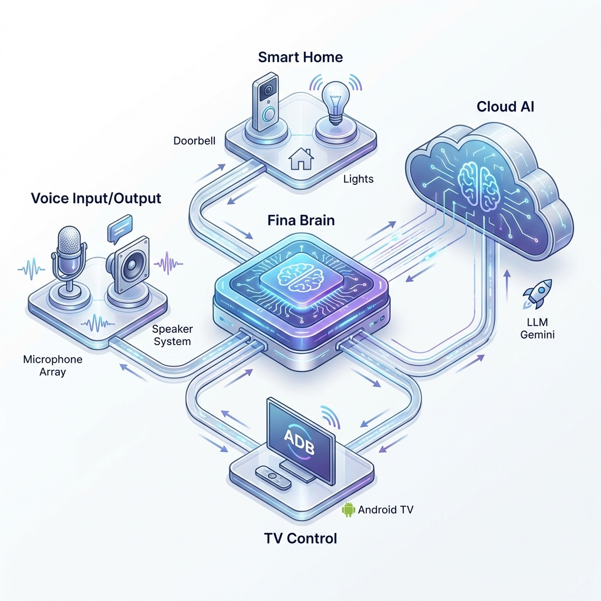

FINA
Phoenix Edition
RC 2.8.7 "PRO MIX"
MANUAL COMPLETO DE USUARIO
1. Introducción
Fina Ergen ha alcanzado su madurez en la versión 2.8.7 RC. Esta edición
representa la estabilidad definitiva antes del gran salto generacional, con un motor de voz
perfeccionado y un sistema de gestión de recursos atómico.
Filosofía de Diseño "Local-First"
- Procesamiento Local: La voz se reconoce (Vosk) y
se sintetiza (Piper) en tu propia máquina.
- Privacidad Absoluta: No enviamos tus clips de
audio a servidores externos.
- Aislamiento de Plugins: Cada función (TV,
Clima, Luces) es un plugin independiente.
1.1 Historia y Evolución
Fina nace como un fork avanzado de Jarvis, adaptado para el público hispanohablante. La serie Phoenix
consolida la integración con Tauri y Vue 3, ofreciendo una experiencia visual premium y fluida.

Figura 1: Diagrama de flujo de datos del núcleo Phoenix estable.
2. Guía de Inicio Rápido
2.1 Instalación de Dependencias
Asegúrate de tener las herramientas base instaladas en tu sistema:
sudo pacman -S android-tools vlc ffmpeg espeak-ng nodejs npm
Luego, instala las dependencias de Python dentro del entorno virtual:
pip install -r requirements.txt
Arranque Oficial Phoenix
Para garantizar la sincronización entre el Cerebro (Python) y la Interfaz (Tauri), usa siempre:
./lanzar_fina_simple.sh
Este script orquesta el Backend, la API y el Frontend, asegurando una carga limpia y monitorizada.
2.2 Configuración de Claves
Edita el archivo config.py o utiliza el panel de ajustes en el Dashboard para gestionar
tus claves de Mistral, OpenWeather y Gmail.

Figura 2: Secuencia de arranque con reporte proactivo de TV.
3. Funcionalidades Avanzadas
3.1 Palabras de Activación Flexibles
Fina responde a múltiples nombres, permitiendo una interacción más natural:
| Palabra |
Ejemplo |
| Fina |
"Fina, ¿qué hora es?" |
| Bebe / Bebé |
"Hola bebé, pon música" |
| Nena |
"Nena, ¿cómo está el clima?" |
| Loquita |
"Loquita, abre YouTube" |
| Compu |
"Compu, busca en Google..." |
3.2 Control Total de Android TV
Controla cualquier televisión Android conectada a tu red local vía ADB:
- "Pon Telefe en la tele" (Sintonización directa de canales)
- "Sube el volumen de la tele 10 puntos"
- "Abre Netflix en la tele" (Lanzamiento de apps por paquete)
🛡️ Sistema de Apagado Atómico (Janitor)
La versión 2.8.7 introduce scripts/janitor.py. Al despedirte de Fina, el sistema ejecuta una purga quirúrgica de procesos huérfanos (Weston, Waydroid, WebKit), asegurando que tu terminal recupere el control instantáneamente sin procesos "zombis".

Figura 3: Interfaz principal con monitor de intensidad y biometría activa.
4. Clima e Inteligencia Contextual
- Sensación Térmica: Reporta la temperatura real percibida.
- Detección de Lluvia: "Fina, ¿cuándo va a llover?"
- Pronóstico Mañana: Consulta detallada de la jornada.
4.1 Cortesía y Plugins
Fina ahora es más atenta. Cualquier orden enviada a los plugins (Clima Surrey, TV TCL) es confirmada verbalmente de inmediato, brindando una experiencia más orgánica.
5. El Futuro: Fina-Ergen
Con la serie Phoenix alcanzando su estabilidad final, anunciamos el inicio del desarrollo de Fina-Ergen:
- IA Adolescente: Una inteligencia más madura, fluida y capaz de razonamientos complejos.
- Hyper-UI: Una interfaz renovada con widgets avanzados y animaciones cinemáticas.
- Ecosistema Extendido: Capacidad de autogestión de plugins y mayor integración domótica proactiva.
Fina Ergen Project - Dankopetro 2026 | El renacimiento ha terminado. Empieza el crecimiento.